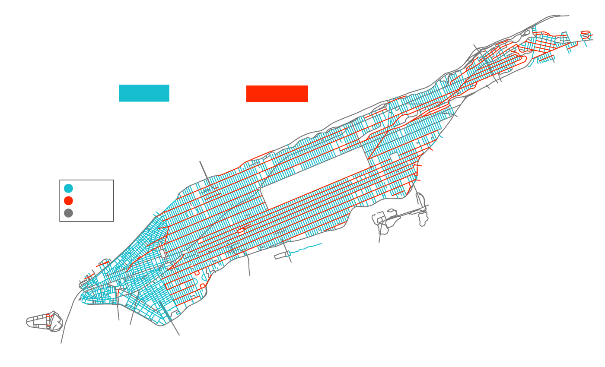
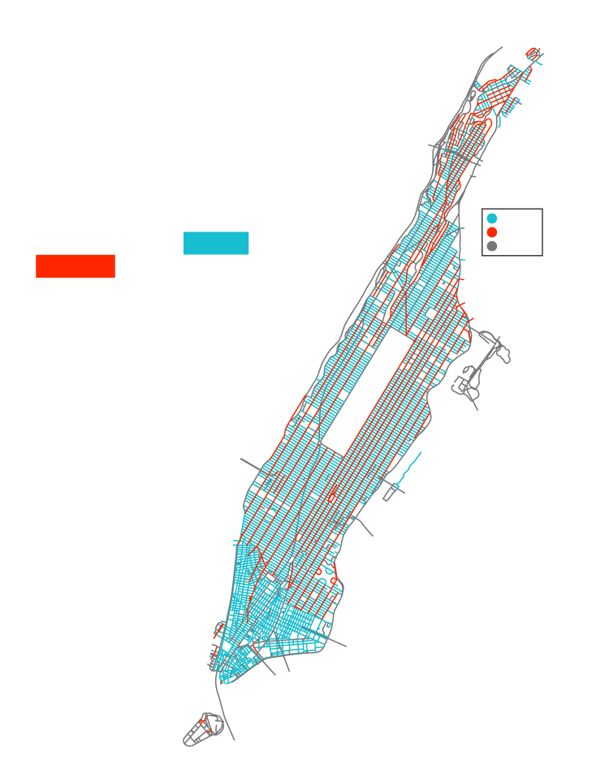

The Ave/St Debate
Manhattan, known for its (mostly) rigid grid of horizontal streets and vertical avenues , is criss-crossed by them – more than 400 miles of the two road types.
Street
Avenue
Other

The Ave/St Debate
Manhattan, known for its (mostly) rigid
grid of horizontal streets and vertical
avenues , is criss-crossed by more
than 400 miles of the two road types.
Street
Avenue
Other